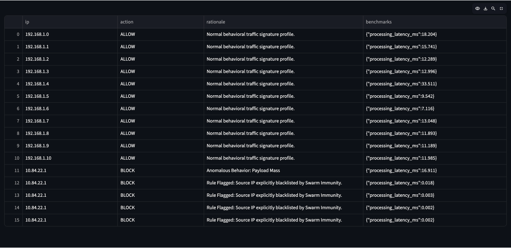

Shieldix: Autonomous Edge Security
The future of cybersecurity is not in the cloud—it is at the edge.
The Problem: The Cloud-Dependency Trap
Today’s cybersecurity is tethered to centralized cloud servers. For critical assets—like satellite constellations, autonomous robots, and industrial grids—this is a fatal vulnerability.
Latency is a risk: Real-time threats cannot wait for a cloud round-trip.
Connection is an assumption: If a device is jammed, disconnected, or operating in deep space, it becomes defenseless.
Centralization is a target: A single cloud failure disables the entire fleet’s security.
The Solution: Scalable, Decentralized Intelligence
Shieldix is a mission-aware, autonomous security engine engineered to live directly on edge hardware. By completely decoupling the core security processing engine from the visual telemetry layer, we provide high-throughput, offline protection for the world’s most critical systems without introducing single points of failure.
Scale & Critical Applications
Built for massive, high-velocity deployments, our architecture thrives where connectivity is limited and stakes are high:
- Satellite Constellations & Space Mesh: Shieldix enables true Decentralized Swarm Immunity. When a threat is detected, nodes pool localized telemetry data to instantly immunize the entire fleet across orbital networks.
- Robotics & Autonomous Drones: Shieldix operates with microsecond execution times to block malicious packet injections without interrupting flight-critical control loops.
- Edge AI & NVIDIA Hardware: Architected for AI-optimized silicon, such as NVIDIA Jetson modules, to perform complex, context-aware anomaly detection directly at the source.
- Critical Industrial Infrastructure: From smart power grids to planetary-scale infrastructure like Axiom OS, our offline-first architecture ensures flawless protection during severe network outages.
Technology Pillars
- 1. Isolation Forest Architecture: Behavioral AI that learns "normal" system status and detects complex anomalies in real-time without bulky databases or persistent cloud synchronization.
- 2. Contextual Policy Matrix: Ingests dynamic device telemetry (Device Role, Mission Phase, Connectivity Status) to intelligently adjust sensitivity thresholds, eliminating false-positive lockdowns during high-intensity operations.
- 3. Multi-Node Swarm Consensus (Threat Voting): Protects against mesh poisoning and sensor corruption. Before a network-wide lockdown occurs, threat signatures must pass a strict consensus validation threshold across independent edge nodes, ensuring malicious or malfunctioning sensors cannot compromise fleet integrity.
- 4. Resilient A/B Memory Architecture (Zero-Downtime OTA): Enables secure, real-time security updates in zero-downtime environments. AI models and security patches are staged in an isolated memory partition (Bank B) and hot-swapped seamlessly mid-operation without requiring system reboots or dropping a single packet of telemetry.
- 5. Microsecond Swarm Circuit-Breaker: Optimized for resource-constrained edge hardware. When a threat signature triggers swarm-wide immunization, the engine instantly switches from intensive AI signature processing (~16.9 ms) to microsecond-scale blacklisting (0.002 ms−0.018 ms). This circuit-breaker protocol shields edge devices from CPU and battery exhaustion during high-mass volumetric attacks.
- 6. Enterprise-Grade Auditability: Built for compliance and strict institutional workflows. The underlying engine provides continuous, tamper-resistant logging that can be exported natively as immutable CSV security audit trails and vector-ready performance graphs for forensic review and compliance reporting.
The Vision
Whether securing a satellite constellation in orbit or a power grid on Earth, Shieldix is the immune system for the edge-computing era. We are building a decentralized, scalable standard for autonomous protection.

